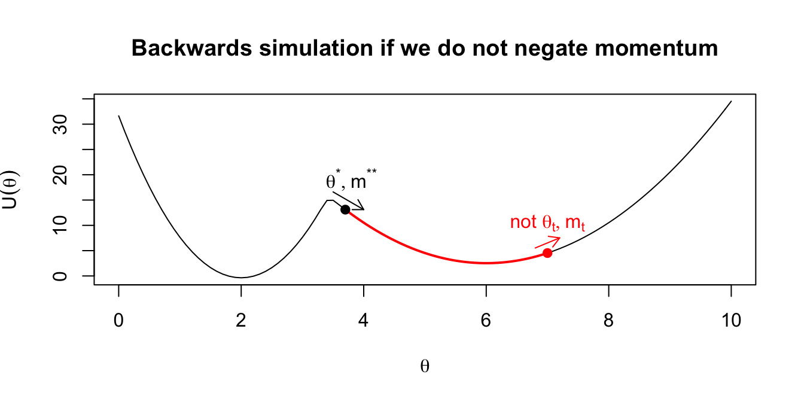
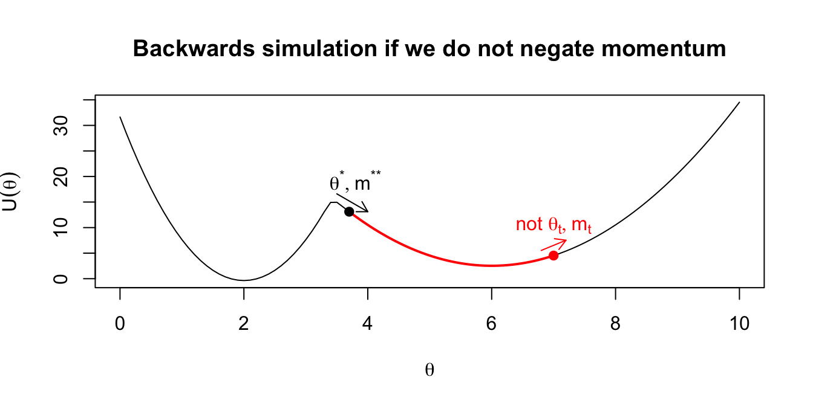

Chapter 2 Hamiltonian Monte Carlo (HMC)
\(\def \mb{\mathbb}\) \(\def \E{\mb{E}}\) \(\def \P{\mb{P}}\) \(\DeclareMathOperator{\var}{Var}\) \(\DeclareMathOperator{\cov}{Cov}\)
| Aims of this chapter |
|---|
| 1. Introduce the Hamiltonian approach for Metropolis-Hastings proposals. |
| 2. Have an appreciation for why Hamiltonian Monte Carlo can be more efficient than Random-walk Metropolis-Hastings. |
| 3. Implement simple examples of Hamiltonian Monte Carlo in R. |
Implementing MCMC can be difficult if we can’t construct a suitable proposal distribution. In this Chapter, we introduce Hamiltonian Monte Carlo (HMC), which can be thought of as a particular way to generate proposals in each iteration of the Metropolis-Hastings algorithm. The aim is to generate proposals \(\theta^*\) which
- can be far from the current values \(\theta^t\) in the Markov chain;
- have high acceptance probability.
These two properties should lead to quick and efficient exploration of the posterior distribution: we can produce representative samples from the posterior distribution quickly.
The disadvantage of this method is that much more computational work is needed to obtain the proposed values at each iteration. However, HMC can be implemented using the language Stan, and so much of this work will be done for us. Stan can be run within R using the package rstan (Stan interfaces with many other languages such as Python and MATLAB.) Stan has a large user community and is very well supported and documented.
2.1 Generating proposals: intuition
As an example, suppose we are trying to sample from a posterior distribution that is a mixture of two normal distributions: \[\theta|x\sim0.9 \times N(2, 0.25^2) + 0.1 \times N(6, 0.5^2).\]
Figure 2.1: Example: we wish to obtain samples from this posterior distribution.
This would be easy to sample from directly, but let’s think about how to sample from this using a Metropolis-Hastings sampler. In HMC, we use a physical analogy of a ball rolling over a frictionless surface.
Consider the following plot of \(-\log f(\theta|x)\).
Figure 2.2: Negative log of our target posterior density. We imagine this function as a surface, with a ball rolling around on top of this surface.
Imagine that \(-\log f(\theta|x)\) represents our frictionless surface. The value of \(\theta\) describes the position of a ball on this surface; given \(\theta\) the coordinates of the ball are known to be \((\theta, -\log f(\theta|x))\). We flick the ball with random force and direction: we give the ball momentum, and wait to see where it is after some duration \(T\).
The ball could end up far from where it started, but gravity will pull the ball towards lower values of \(-\log f(\theta|x)\): higher values of posterior density. An occasional flick of sufficient force in the right direction will help the ball move from one ‘valley’ (mode of the posterior) to another. If the ball is travelling upwards at either edge (i.e. it is one of the tails of the distribution), it will eventually stop moving, and accelerate back towards the nearest posterior mode.
This is the intuition behind how we will generate proposals, emphasising that we will keep changing the trajectory of the ball by giving it a random flick every \(T\) units of time. (It is not yet apparent how this might give proposals with high acceptance probabilities; this will become clear later.)
2.2 Hamiltonian dynamics
In general, for a ball moving over a frictionless surface, given the ball’s starting position \(\theta\) and momentum \(m\), Hamilton’s equations of motion to tell us how the ball’s position and momentum change over time:
\[\begin{align} \frac{d\theta}{dt}&=\frac{\partial H(\theta,m)}{\partial m}, \tag{2.1}\\ \frac{dm}{dt}&=-\frac{\partial H(\theta,m)}{\partial \theta}, \end{align}\]
where \(H(\theta,m)\) is the Hamiltonian and gives the ball’s total energy as a function of its position and momentum. You do not need to know how these equations are derived. We will need to solve these equations numerically; we will discuss this shortly.
We will consider Hamiltonians of the form
\[ H(\theta,m) = U(\theta) + K(m), \] where \(U(\theta)\) is the potential energy of a ball at location \(\theta\) and encodes information about the surface the ball is travelling over: relatively large \(U(\theta)\) means that at position \(\theta\), the ball is relatively high above the ground, and so has more potential energy. The term \(K(m)\) is the kinetic energy of the ball given a momentum of \(m\).
2.2.1 Conservation of energy
Given an initial position \(\theta\) and momentum \(m\), the Hamiltonian \(H(\theta,m)\) is constant over time: \[ \frac{d H(\theta,m)}{dt} = 0, \] i.e. total energy is conserved. This is the property we are going to exploit to get proposals with high acceptance probability.
2.3 Using Hamilton’s equations to generate proposals
An outline of what we will do is as follows.
- Introduce a dummy variable \(m\), and jointly sample \(\theta\) and \(m\). (We will discard our samples of \(m\) at the end.)
- Construct a joint probability distribution for \(\theta\) and \(m\) based on the Hamiltonian \(H(\theta,m)\). Do this in such a way that the marginal distribution of \(\theta\) will be the posterior that we wish to sample from.
- Within a Metropolis-Hastings sampler, make use of Hamilton’s equations to obtain a proposed value \(\theta^*, m^*\) given the current state \((\theta^t, m^t)\) in the Markov chain.
2.4 The joint distribution for \((\theta, m)\)
We set \[ p(\theta,m)\propto \exp(-H(\theta,m)), \] where \(H(\theta,m)\) is a Hamiltonian given by \[ H(\theta,m) = U(\theta) + K(m), \] and where we set \[ U(\theta) = -\log f(\theta | x). \] Note that when evaluating \(U(\theta)\) HMC algorithm, it will be sufficient to evaluate \(-\log(f(\theta)f(x|\theta))\) only: we only need to know the prior and likelihood.
We also set \[ K(m) = \frac{m^2}{2\sigma^2} \] It then follows that \[ p(\theta,m)\propto f(\theta|x) \exp\left(-\frac{m^2}{2\sigma^2}\right), \] from which we see that
- \(\theta\) and \(m\) are independent;
- the marginal distribution of \(\theta\) is the posterior distribution we want to sample from;
- \(m\) has the \(N(0,\sigma^2)\) distribution.
2.5 The HMC algorithm
Suppose the current state of the Markov chain is \((\theta_t, m_t)\)
- Discard the current value of the momentum and set \(m_t\) to be a new randomly sampled value, sampled directly from its marginal distribution: \(N(0,\sigma^2)\).
- Given the pair \((\theta_t, m_t)\), solve (numerically) Hamilton’s equations, to obtain a new position and momentum \((\theta^*, m^{**})\) after some fixed time \(T\).
- Multiply the new momentum by \(-1\): define \(m^* = -m^{**}\)
- Accept \((\theta^*,m^*)\) as the new location and momentum \((\theta_{t+1},m_{t+1})\), with probability \[\begin{align} &\min\left\lbrace 1, \exp\left\lbrace H(\theta_t,m_t) - H(\theta^*,m^*) \right\rbrace \right\rbrace, \\ =&\min\left\lbrace 1, \exp\left\lbrace U(\theta_t) - U(\theta^*) + K(m_t) - K(m^*) \right\rbrace \right\rbrace \\ =&\min\left\lbrace 1, \frac{f(\theta^*)f(x|\theta^*)p(m^{*})}{f(\theta_t)f(x|\theta_t)p(m_t)} \right\rbrace, \tag{2.2} \end{align}\] otherwise set \((\theta_{t+1},m_{t+1})=(\theta_{t},m_t)\).
Some comments:
- In theory, the acceptance probability will be 1, because of conservation of energy: when we move from \((\theta_t, m_t)\) to \((\theta^*,m^*)\), the Hamiltonian is unchanged. In practice, the acceptance probability may be slightly less than 1, because there may be numerical errors when we solve Hamilton’s equations - we may not find the correct position and momentum after time \(T\).
- We need step 1 to randomly change the momentum and consequently the trajectory of the ball at each iteration, thereby enabling random exploration of the parameter space. Without this step, we would just follow a deterministic trajectory specified by Hamilton’s equations.
- Multiplying the momentum by -1 gives proposals that are reversible: applying Hamilton’s equations to a starting point \((\theta^*,m^*) = (\theta^*,-m^{**})\) for duration \(T\) would get us back to \((\theta_t,m_t)\). (This is why there is no ratio of proposal densities in the formula for the acceptance probability: they cancel out.) We illustrate this in the following plots.
 

Figure 2.3: Intuition on why the final momentum is reversed to create a symmetric proposal distribution.
2.5.1 Approximate solution of Hamilton’s equations
We have a pair of simultaneous equations in Equation (2.1) describing the location and momentum over time. Step (2) of the HMC algorithm says that given a current location and momentum, we simulate forwards according to our definition for total energy for a set time \(T\). To implement this simulation, we must discretise time, and perform a number of small steps of size \(\epsilon\).
You may have previously seen the most common (and simple) approach for approximating the solution to a system of differential equations. This is Euler’s method, which says \(x(t+\epsilon)=x(t)+\epsilon\frac{dx(t)}{t}\). Therefore for our one dimensional scenario in HMC, we would have: \[\begin{align} m_{t + \epsilon} &= m_t - \epsilon \frac{dU(\theta_t)}{d\theta}, \\ \theta_{t+\epsilon} &= \theta_t + \epsilon \frac{m_t}{\sigma^2}. \end{align}\]
The error associated with the Euler approach is of the order of \(\epsilon\) globally, and so in practice for HMC, we use an approximation with error of order \(\epsilon^2\) for more stable results. This is called the Leapfrog method. We give the details of this for completeness, but will not discuss it in detail. Notice, however, its similarity to the Euler method—we take steps of half the size, but rather than updating both momentum and location simultaneously, we leapfrog over the previous update each time. The leapfrog method is: \[\begin{align} m_{t+ \frac{\epsilon}{2}} &= m_t - \frac{\epsilon}{2} \frac{dU(\theta_t)}{d\theta}, \\ \theta_{t+\epsilon} &= \theta_t + \epsilon \frac{m_{t+\frac{\epsilon}{2}}}{\sigma^2}, \\ m_{t+\epsilon} &= m_{t+\frac{\epsilon}{2}} - \frac{\epsilon}{2} \frac{dU(\theta_{t+\epsilon})}{d\theta}. \end{align}\]
2.6 Multivariate \(\theta\)
The plots and description so far have all corresponded to a posterior distribution for a single parameter \(\theta\). The extension to multivariate \(\theta\) is straightforward. For \(d\)-dimensional \(\theta = (\theta_1,\ldots,\theta_d)\), we introduce a \(d\)-dimensional momentum vector \(m=(m_1,\ldots,m_d)\). The elements of \(m\) are typically chosen to be independent and normally distributed: \(m_i\sim N(0,\sigma^2_i)\).
In step 1 of the HMC algorithm, we sample a new momentum vector \(m^t\), with element \(i\) sampled from the \(N(0,\sigma^2_i)\) distribution. In the Leapfrog method, the momentum and position vectors are updated component-wise:
\[\begin{align} m_{i, t+ \frac{\epsilon}{2}} &= m_{i,t} - \frac{\epsilon}{2} \frac{\partial U(\theta_t)}{\partial\theta_i}, \\ \theta_{i, t+\epsilon} &= \theta_{i,t} + \epsilon \frac{m_{i, t+\frac{\epsilon}{2}}}{\sigma_i^2}, \\ m_{i,t+\epsilon} &= m_{i,t+\frac{\epsilon}{2}} - \frac{\epsilon}{2} \frac{\partial U(\theta_{t+\epsilon})}{\partial\theta_i}. \end{align}\]
2.7 Tuning parameters
In the HMC algorithm, we have to choose a variance parameter \(\sigma^2\) for each momentum variable, the time duration \(T\) over which we update the position and momentum using Hamilton’s equations, and the step size \(\epsilon\) used in the Leapfrog method.
2.7.1 The tuning parameter \(\sigma^2\)
Recall that the definition of the kinetic energy is \(K(m)=\frac{m^2}{2\sigma^2}\), and that the marginal distribution of the kinetic energy is \(m\sim N(0,\sigma^2)\).
The size of \(\sigma\) therefore affects how variable the momentum will be, and because the mean is 0, we can think of this as how large a momentum we will allow. Returning to our intuitive introduction, if the ball is currently in a trough of the mountainous region that it is exploring, it will need a large momentum to get “up and over” the potential energy gain required to surpass a summit and be able to explore other parts of the parameter space.
2.7.2 The Hamiltonian movement tuning parameters \(T\) and \(\epsilon\)
These two parameters are closely linked. A large \(\epsilon\) will result in increased errors in the approximation to the Hamiltonian system. Smaller values are therefore ideal, but come at a computational cost.
The choice of \(T\) is a more difficult decision that is not necessarily equal for every scenario, in a similar way to the step length variation parameter in the classic random-walk MH algorithm. Large \(T\) can lead to us overshooting peaks in the posterior density and missing them entirely, whereas small \(T\) may not allow the efficient exploration that we’re hoping for. See more on this below when we implement HMC in an example.
Highly complex posteriors can cause problems for the approximation methods, and lead to divergent iterations. This is when sharp curvatures lead to poor approximations and can lead to biases in the posterior estimate because the parameter space was not explored in full. It’s important to remember that HMC is not a complete solution to difficulties posed by MCMC methods, and the benefits it provides in efficiency come at a computational cost. Further, there are situations where the system cannot be approximated at all, and so HMC cannot be applied.
2.8 Implementing HMC ‘by hand’
In this section we will implement a two-dimensional parameter space example, implemented directly in R to explore the differences between the three MCMC samplers that you have seen: random-walk MH, Gibbs and HMC. In the next section, we will see how to implement HMC in more complex scenarios using pre-built software—this has a number of benefits such as helping with the issue of tuning parameters.
We’ll attempt to sample from a standard distribution, so we can check the results. Suppose our posterior is a bivariate Gaussian: \[ \left. \begin{pmatrix} \theta_1 \\ \theta_2 \end{pmatrix}\right| x \sim N_2\left( \begin{pmatrix} 0 \\ 0 \end{pmatrix}, \begin{pmatrix} 1 & 0.95 \\ 0.95 & 1\end{pmatrix}\right). \]
2.8.1 Random-walk MH
We will implement a random-walk MH approach to this sampling problem by using a proposal distribution \[\begin{equation} \left.\begin{pmatrix} \theta_1^* \\ \theta_2^* \end{pmatrix} \right| \begin{pmatrix} \theta_{1, t} \\ \theta_{2, t} \end{pmatrix} \sim N_2\left( \begin{pmatrix} \theta_{1, t} \\ \theta_{2, t} \end{pmatrix}, \begin{pmatrix} \sigma_1^2 & 0 \\ 0 & \sigma_2^2 \end{pmatrix}\right). \end{equation}\]
A function to carry out random-walk MH for this scenario is given here:
gaussian_2d_RW <- function(n_iter, sigma, theta) { # sigma and theta 2d vectors
samples <- matrix(NA, nrow = n_iter, ncol = 6)
for (i in 1:n_iter) {
prop_theta <- rnorm(2, mean = theta, sd = sigma)
m <- mvtnorm::dmvnorm(prop_theta,
mean = c(0, 0),
sigma = matrix(c(1,0.95,0.95,1),
nrow = 2),
log = T) -
mvtnorm::dmvnorm(theta,
mean = c(0, 0),
sigma = matrix(c(1,0.95,0.95,1),
nrow = 2),
log = T)
if (runif(1) < exp(m)) {
theta <- prop_theta
samples[i, ] <- c(theta, prop_theta, min(exp(m),1), 1)
} else {
samples[i, ] <- c(theta, prop_theta, min(exp(m),1), 0)
}
}
colnames(samples) <- c("theta1","theta2","ptheta1",
"ptheta2","m","accept")
return(tibble::as_tibble(samples))
}Here, we will use a random walk perturbation variance of \(\sigma^2=0.5^2\), begin our chain at \((\theta_{1,0},\theta_{2,0})=(-1,1)\) and run the chain for 1,000 iterations. This gives an acceptance rate of 0.457 in the instance implemented here.
The results of this sampler are shown over Figures 2.4-2.6. We see from the bivariate scatter/density plot in Figure 2.4 that the target distribution is being captured reasonably well.
We gain insight into the process of the MH algorithm with Figure 2.5, which shows both the accepted and rejected proposed values. For each proposal, the colour quantifies the acceptance probability, and the shape of the point indicates whether it was accepted in reality. From this plot we can see the guaranteed proposals which lie along the ridge of high density according to the target distribution, but we also see how occasionally we get a proposal accepted that had low probability (e.g. a dark blue circle). We also get an impression of the efficiency of our sampler from such a plot. The high volume of proposed parameter pairs that are shown as having been rejected highlights the wasted computational efforts here.
Finally, in Figure 2.6 we see the trace plot of \(\theta_1\). We see the autocorrelation that exists from an MCMC sampler, and that this particular example is moving around the parameter space slowly. This figure also shows the proposed parameter value at each iteration, which gives an indication of the size of steps that can be taken in this particular random walk.
Figure 2.4: Bivariate Gaussian sampled using a random-walk Metropolis-Hastings algorithm. The true Gaussian density is shown in blue, and overlaid in black with both the samples and estimated density.
Figure 2.5: The proposed parameter values during a random-walk Metropolis-Hastings algorithm to sample from a bivariate Gaussian. The true density is shown in blue. The proposed values are coloured according to their acceptance probability when proposed, and the point character gives the resulting acceptance decision.
Figure 2.6: The trace plot for samples of the first dimension of a bivariate Gaussian. Obtained using a random-walk Metropolis-Hastings algorithm. Black points give the accepted sample trace, with the proposed parameter value at each iteration also highlighted in red.
2.8.2 Gibbs
This particular example is easy to implement as a Gibbs sampler, due to conditional distributions of the multivariate Gaussian being Gaussian themselves. Here we show the approach for sampling from the bivariate Gaussian using Gibbs, with 1,000 iterations.
gaussian_2d_Gibbs <- function(n_iter, theta) { # theta 2d vectors
samples <- matrix(NA, nrow = n_iter, ncol = 2)
for (i in 1:n_iter) {
theta[1] <- rnorm(1, mean = 0.95 * theta[2], sd = sqrt((1-0.95^2)))
theta[2] <- rnorm(1, mean = 0.95 * theta[1], sd = sqrt((1-0.95^2)))
samples[i, ] <- theta
}
colnames(samples) <- c("theta1","theta2")
return(as_tibble(samples))
}Figures 2.7 and 2.8 show the results of applying Gibbs. We can see this provides a good approximation to the target distribution. In Gibbs sampling, all proposals are accepted, and so we do not waste computational time. However, note that the ease of sampling from the conditional distribution is fairly rare in practice.
Figure 2.7: Bivariate Gaussian sampled using a Gibbs algorithm. The true Gaussian density is shown in blue, and overlaid in black with both the samples and estimated density.
Figure 2.8: The trace plot for samples of the first dimension of a bivariate Gaussian. Obtained using a Gibbs algorithm.
2.8.3 HMC
We now show an implementation to this sampling exercise using HMC. The following code implements HMC for our simple, bivariate Gaussian example. Note that we make use of the function Deriv::Deriv() for differentiating the log posterior: this makes a new function which will return the derivatives.
sigma_inv <- solve(matrix(c(1, 0.95, 0.95, 1), nrow = 2))
U <- function(x,y) (matrix(c(x,y), nrow = 1) %*%
sigma_inv %*%
matrix(c(x,y), nrow = 2)) / 2
U_grad <- Deriv::Deriv(U)
gaussian_2d_HMC <- function(n_iter, epsilon, L, current_theta) {
samples <- matrix(NA, nrow = n_iter, ncol = 6)
for (j in 1:n_iter) {
theta <- current_theta
m <- rnorm(2, 0, 1)
current_m <- m
# Make a half step for momentum at the beginning
m <- m - epsilon * U_grad(theta[1], theta[2]) / 2
for (i in 1:floor(L/epsilon)) {
# Make a full step for the position
theta <- theta + epsilon * m
# Make a full step for the momentum, except at end of trajectory
if (i != floor(L/epsilon)) m <- m - epsilon * U_grad(theta[1], theta[2])
}
# Make a half step for momentum at the end
m <- m - epsilon * U_grad(theta[1], theta[2]) / 2
# Negate momentum at end of trajectory to make the proposal symmetric
m <- -m
# Evaluate potential and kinetic energies at start and end of trajectory
current_U <- U(current_theta[1], current_theta[2])
current_K <- sum(current_m^2) / 2
proposed_U <- U(theta[1], theta[2])
proposed_K <- sum(m^2) / 2
# Accept or reject the state at end of trajectory
accept_prob <- exp(current_U - proposed_U + current_K - proposed_K)
if (runif(1) < accept_prob) {
current_theta <- theta
samples[j, ] <- c(current_theta, current_theta, min(accept_prob,1), 1)
} else {
samples[j, ] <- c(current_theta, theta, min(accept_prob,1), 0)
}
}
colnames(samples) <- c("theta1","theta2","ptheta1","ptheta2","acceptprob","accept")
return(as_tibble(samples))
}Here we have implemented HMC with a momentum proposal variance of \(\sigma^2=1\), a leapfrog step duration of \(L=5\), and a leapfrog step size of \(\epsilon=0.25\). Note that this means our leapfrog method will involve simulating 20 locations to reach the proposal location in each step of the HMC algorithm. The sampler was run for 1,000 iterations, and had an acceptance rate of 0.892. Note that, although not 1 as in Gibbs sampling, this is a very high acceptance rate and about double that of the random-walk MH algorithm we have implemented here.
The HMC sample is shown in Figure 2.9, and in Figure 2.10 all proposals are shown, with both their acceptance probability and final outcome. Because of the high acceptance rate, there are very few rejected parameter values. However, we do see that the algorithm is able to explore extreme, low density regions in the parameter space. If this were a multi-modal example, we can imagine this would be useful for moving between modes.
Finally, Figure 2.11, the trace plot for \(\theta_1\) is shown, with sampled values in black, and any rejected proposals shown in red.
Figure 2.9: Bivariate Gaussian sampled using a HMC algorithm. The true Gaussian density is shown in blue, and overlaid in black with both the samples and estimated density.
Figure 2.10: The proposed parameter values during a HMC algorithm to sample from a bivariate Gaussian. The true density is shown in blue. The proposed values are coloured according to their acceptance probability when proposed, and the point character gives the resulting acceptance decision.
Figure 2.11: The trace plot for samples of the first dimension of a bivariate Gaussian. Obtained using a HMC algorithm. Black points give the accepted sample trace, with the proposed parameter value at each iteration also highlighted in red.
The autocorrelation here is much lower than for the random-walk MH approach. Given that the marginal distribution of \(\theta_1\) is a standard normal, this trace plot looks similar to a random sample from this marginal (which would be our gold-standard sampling approach).
We will confirm this with some autocorrelation plots (for \(\theta_1\) only)
acf(MH$theta1)
acf(Gibbs$theta1)
acf(HMC$theta1)
Figure 2.12: Comparing autocorrelations in the Markov chains produced by random walk MH, Gibbs, and HMC
2.8.3.1 The leapfrog proposals
To gain a deeper understanding of the HMC proposal steps, we can implement the leapfrog movement algorithm to view proposals.
For example, Figure 2.13 shows the path of the Hamiltonian movement, given an initial location of \((-1.5,-1.55)\), shown in green. The bivariate Gaussian density of the target distribution is shown in blue, and we can see how the concept of an item under gravity applies here. Remember that this is not the path of the HMC algorithm itself, but is the path of the leapfrog algorithm used to generate the next proposal in the HMC algorithm. So here, the current sampled value is that in green, and the value in red will be the proposed parameter value for this iteration.
Note that the resulting path is dependent upon the initial momentum (which we re-sample at the start of each HMC iteration). Here, the initial momentum was (-1,1), which relates to moving left and up in the location space. We see that this is the initial course that the location trajectory takes.
The value of the Hamiltonian is shown, along with its breakdown into the kinetic and potential energy components (remember that \(H=U+K\)). The constant trade-off between potential and kinetic energy is obvious here. We also see the error we are introducing through implementing the leapfrog algorithm. If our simulation of Hamiltonian movement was exact, the Hamiltonian would be constant. This leapfrog error is why an MH acceptance step must take place.
The bottom panel shows what this MH acceptance probability would be, were we to stop the leapfrog movement at any of these intermediate points and consider them as a proposed location in the HMC algorithm. In this example, the leapfrog path covers a wide range of possible parameter values, yet we can see that the acceptance probability remains above 0.7 throughout. It’s important to remember that the acceptance of a proposed location in HMC is not related to its distance from the current location, but is only related to the discrepancy in energy brought about by the leapfrog approximation.
If we repeat this simulation with a smaller \(\epsilon\), we get a better approximation to the true Hamiltonian movement. This is shown in Figure 2.14, where it is clear that given the initial location and momentum, the path is deterministic. At this better approximation, the HMC acceptance probability is much higher (over 0.97) at any location along this trajectory. Remember that HMC is still a Metropolis-Hastings sampler, it just has a different way (the leapfrog trajectory such as in Figure 2.13) of proposing locations to the random-walk approach. Although this has a higher acceptance probability than we would likely expect from a random-walk proposal, this is clearly much more computationally expensive than a single draw from a bivariate normal proposal distribution.
Note that we can also relate the energy to the leapfrog location path. About halfway along the path is at the mode of the bivariate normal (square, magenta coloured point), and if we consider the potential energy at this time, it is at a minimum (as potential energy is the negative log density).
![Given a starting location of (-1.5,-1.55) and an initial momentum of (-1,1), the leapfrog algorithm is implemented for 5 'time-units'. This is achieved by using an L of 5 and an epsilon of 0.1, which results in 50 intermediate simulated locations. Note that this is the same 'length' of time as our HMC implementation used, but a smaller step size in the leapfrog algorith, as we used an epsilon of 0.25 there. The resulting path is shown in the parameter space, the momentum space, and the Hamiltonian is also given. The initial location is shown in green and the final location in red in the top set of panels. In the middle panel, the Hamiltonian is shown (black), along with the potential (red) and kinetic (blue) energies. The point in magenta is highlighted, showing its location near the mode of the bivariate normal, and that the corresponding potential energy is low. The bottom panel shows what the acceptance probability would be for each point along the leapfrog path, were that to be the stopping point chosen for the HMC proposal.](MAS61006-S2-Notes_files/figure-html/leapfrog-1-1.png)
Figure 2.13: Given a starting location of (-1.5,-1.55) and an initial momentum of (-1,1), the leapfrog algorithm is implemented for 5 ‘time-units’. This is achieved by using an L of 5 and an epsilon of 0.1, which results in 50 intermediate simulated locations. Note that this is the same ‘length’ of time as our HMC implementation used, but a smaller step size in the leapfrog algorith, as we used an epsilon of 0.25 there. The resulting path is shown in the parameter space, the momentum space, and the Hamiltonian is also given. The initial location is shown in green and the final location in red in the top set of panels. In the middle panel, the Hamiltonian is shown (black), along with the potential (red) and kinetic (blue) energies. The point in magenta is highlighted, showing its location near the mode of the bivariate normal, and that the corresponding potential energy is low. The bottom panel shows what the acceptance probability would be for each point along the leapfrog path, were that to be the stopping point chosen for the HMC proposal.

Figure 2.14: The previous figure re-produced but with an epsilon of 0.01 rather than 0.1, i.e. the Hamiltonian movement is simulated at a closer approximation to the exact process.
We can also compare the importance of the initial, re-sampled momentum on the resulting path using Figure 2.15. This shows the leapfrog path from the same initial location, and for the same length of time, but with an initial starting momentum of (2,2). This equates to moving up and to the right at a higher speed than the previous example. Rather than ‘bouncing’ back and forth across the space, the imaginary ball has lots of energy to shoot across the space.
Figure 2.15: A repeat of the above simulation, but with an initial momentum of (2,2).
2.8.4 Comparing random-walk and HMC samplers
In Figure 2.16 we compare the movement around the sample space of the random-walk MH and HMC algorithms. Here we have thinned the random-walk samples, only showing every 20 iterations of the random-walk sampler. Recall that the HMC implementation here involved the tuning parameters \(L=5,\epsilon=0.25\) and so there are 20 intermediate steps taken as part of the leapfrog location proposal. This is still not a direct comparison between the likely change in locations at each step for the two approaches, but is a fair comparison.
We see the key differences in how the proposal processes of the two algorithms produce different sampling schemes. The HMC approach can traverse back and forth across the entire sample space in fewer iterations than the random walk and displays lower autocorrelation in the sampled locations.
Figure 2.16: Left: A sample from the random walk MH algorithm, thinned to every 20 samples to give 50 values. Right: A sample of 50 values (not thinned) from the HMC algorithm.
2.9 Summary
In this chapter we’ve introduced the HMC algorithm as an improvement to the difficulties that random walk MCMC algorithms can pose. In HMC, we use the curvature of the posterior density at our current location to inform on a sensible direction to move in, rather than randomly stepping like in MH. This additional information can often lead to more efficient samplers, but this comes at a computational cost—we must evaluate the derivative of the log posterior density. There are situations where this will be computationally burdensome, or even impossible.